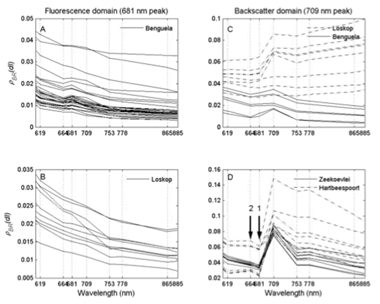
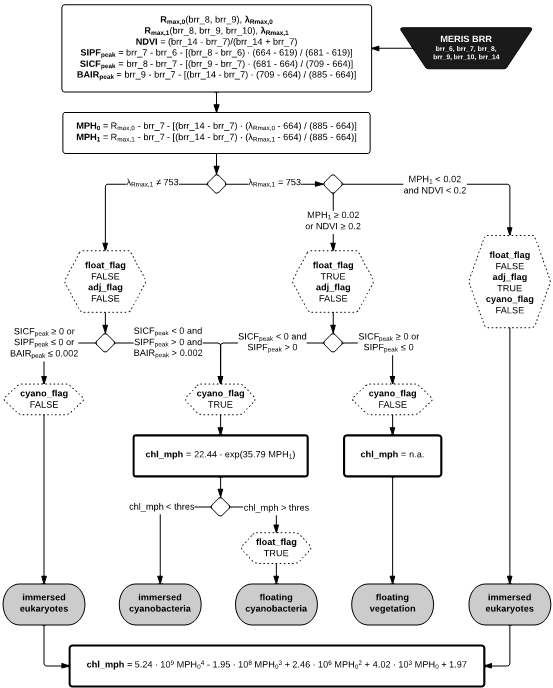

| OLCI MPH/CHL Processor - Algorithm Specification | |
The Maximum Peak Height (MPH) algorithm exploits bottom-of-Rayleigh reflectance peaks in the red and near-infrared bands above a baseline, which is drawn between the bands at 664nm, and 885nm (Matthews et al., 2012). This baseline technique is basically the same used in the Fluorescence Line Height (FLH) and Maximum Chlorophyll Index (MCI) algorithms (Gower et al., 1999).
Different reflectance peak positions occur mostly as a consequence of pigment concentration levels, and these peaks' heights depend on specific optical drivers.

For the most common water types, MPH selects a suitable baseline using a sequence of predefined conditions and thresholds.

| Wavelength (nm) | MERIS BRR band | OLCI BRR band |
| 619 | brr_6 (rBRR_06) | rBRR_07 |
| 664 | brr_7 (rBRR_07) | rBRR_08 |
| 681 | brr_8 (rBRR_08) | rBRR_10 |
| 709 | brr_9 (rBRR_09) | rBRR_11 |
| 753 | brr_10 (rBRR_10) | rBRR_12 |
| 885 | brr_14 (rBRR_14) | rBRR_18 |
Improved algorithm for routine monitoring of cyanobacteria and eutrophication in inland and near-coastal waters
(https://doi.org/10.1016/j.rse.2014.10.010)